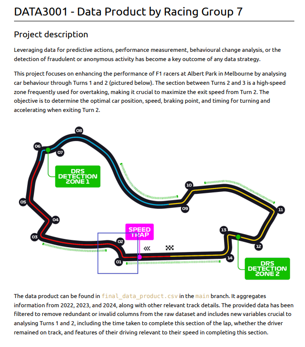

Formula One Data Transformation
Disclaimer: Due to data privacy and confidentiality requirements, limited information will be provided about this project.
Tasks Performed
- Aggregating data by combining multiple files into a single data set with shared variable names.
- Filtering by removing data points collected from outside Sector 1 of the lap. Also lap records that had an insufficient quantity of data points, which wouldn't offer beneficial information.
- Interpolation to determine which laps remained within track limits, enabling us to filter out any invalid laps where the driver went off course.
- Variable creation was utilised to offer more informative variables for future modelling and queries. For example, a single braking variable from the aggregated data was split into three; the moment before braking begun, the moment when braking was initiated, and the moment when braking was at maximum.
- Handling unstandardised data was required since not every lap reading had a data point at a shared start and end point of the track. Interpolation between nearby data points was used to solve this issue, enabling estimations of when every record crossed the shared starting and end lines.
Reflection
Overall, I was pleased with the final product that my team produced. Collaborating on EDAs enabled us to generate insightful findings which we were able to showcase in our completed database. I was able to gain a lot of experience transforming raw data into an informative dataset and also learned about different interpolation techniques which I can use in my future projects to make calculated estimations.
Contributors
- Tonia Li
- Harsh Charu Murali
- Branko Stajic
- Alex Yang Zhu
- Zach Wan
- UNSW Sydney
- Oracle